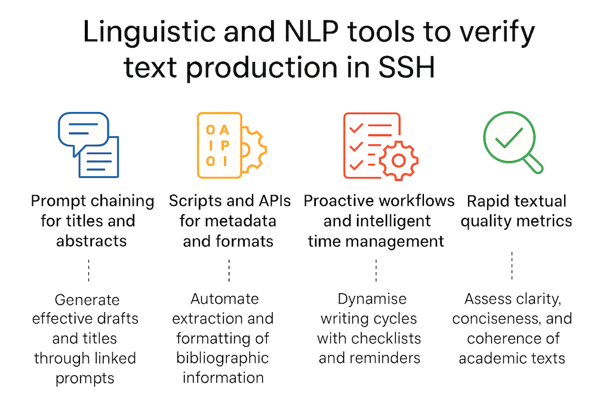

10 Writing calls, grants, abstracts, and intelligent automations
10.1 Introduction
In the context of growing pressure for continuous and measurable scientific productivity, accompanied by the proliferation of competitive calls for proposals and increasingly tight deadlines, the strategic integration of AI-based tools represents a concrete opportunity to streamline and enhance editorial practices in academic research.
In this scenario, where the needs for clarity of expression, thematic relevance and persuasiveness converge, AI can act as a lever to combine operational efficiency and argumentative quality.
The conscious use of intelligent systems in Academic writing flows – from design to revision – makes it possible to lighten the executive load associated with the most repetitive phases of intellectual work, allowing researchers to focus their attention on activities with high cognitive value, such as critical analysis, argumentation and theoretical construction.
👉🏻 This results in greater reflectiveness in decision-making processes and better communication in the texts produced.
In particular, the writing of calls for papers (project proposals for competitive grants and scientific abstracts) can be significantly facilitated by intelligent automation, capable of supporting the entire text production cycle from title generation to logical structuring, from stylisation to quality control.
Five priority areas can be identified in which GAI finds effective application in the Social Sciences and Humanities (SSH), promoting not only the acceleration of processes, but also their conceptual and epistemic refinement:
- Prompt chaining for titles and abstracts
- Scripts/APIs for bibliographic metadata and automatic summaries
- Proactive workflows and automated reminders
- Rapid text quality metrics
- Cognitive offloading to optimise mental resource management

10.2 1. Prompt chaining for titles and abstracts
In the process of generating titles and abstracts, one of the most effective applications of GAI is prompt chaining, i.e. the structured concatenation of text commands.
Through the use of progressive sequences of controlled prompts, the researcher can guide the linguistic model through distinct but interconnected phases, which simulate the iterative reasoning typical of academic writing.
We start with a simple thematic statement to generate a list of titles consistent with the disciplinary domain and style required by the editorial context.
Next, the selected titles are developed into draft abstracts, structured according to the specific rhetorical conventions of the field (objectives, method, expected results, implications).
Finally, again using targeted prompts, the text is stylistically revised and linguistically optimised to improve readability, impact and adherence to formal requirements.
- Prompt 1: “Generate 5 Academic titles for a project on the relationship between AI and political discourse analysis.”
- Prompt 2: “Write a draft abstract for title X, using a formal style and no more than 150 words.”
- Prompt 3: “Reformulate the text with a more persuasive tone, maintaining the academic register.”
In the context of SSH, prompt chaining is particularly useful for exploring different interpretative angles, verifying consistency between the formulation of the problem and the proposed approach, and refining the tone according to the target audience (Scientific committee, Funder, Journal).
👉🏻 To reducing the time needed to produce a satisfactory version, this methodology encourages greater reflection on the editorial process, transforming the AI tool into an intellectually stimulating interlocutor and not just a mere automated assistant.
10.3 2. Scripts and APIs for metadata and formats
Within the Academic writing workflow, certain tasks such as managing bibliographic metadata, converting document formats and generating automatic summaries are operationally intensive yet cognitively low-impact.
In this context, the integration of custom scripts and APIs (Application Programming Interfaces) enables the automation of repetitive processes, facilitating standardisation and reducing the risk of errors.
API-based tools such as Zotero, CrossRef, Semantic Scholar or OpenAI can be queried to extract, normalise, and reformat bibliographic metadata according to specific citation styles (APA, MLA, Chicago, etc.), ensuring coherence and accuracy even during the final revision stages.
Similarly, Python scripts or plug-ins for editorial environments (such as Word or LaTeX) allow for rapid document conversion between formats (e.g., from Word to PDF with embedded metadata or from LaTeX to XML for online submission).
See Python Scripts For Web Scraping Metadata From Descriptions About The Datasets Of The International Scenario Of Research Data Repositories
See pybliometrics: Scriptable bibliometrics using a Python interface to Scopus
See The Modern Methods of Data Analysis in Social Research: Python Programming Language and its Pandas Library as an Example- a Theoretic Study
In particular, the combined use of APIs and scripts allows you to automate:
- The generation of complete bibliographic references (in APA, MLA, Chicago, etc.);
- The retrieval of scientific article abstracts
- The conversion of files (PDF → text, BibTeX → JSON);
- The creation of summaries of the state of the art.
- The generation of automatic summaries of scientific articles or regulatory acts, to be used as study material, as a basis for developing original abstracts, or as support for the literature analysis phase, with significant savings in time and cognitive load.
In the SSH, where researchers often work with heterogeneous sources and multi-methodological approaches, these automations facilitate more robust information management, making it easier to organise sources, track references, and prepare materials ready for submission.
10.4 3. Proactive workflows and intelligent time management
In today’s Academic environment, characterized by increasing organizational complexity and a multitude of simultaneous tasks (teaching, research, dissemination, planning), the ability to effectively manage time and priorities is a strategic skill.
👉🏻 In this scenario, AI offers concrete tools for building proactive workflows, i.e. organisational processes in which technologies, often based on AI automation, are able to anticipate user needs and intervene before problems or explicit needs arise.
👉🏻Through the integration of advanced language models, task management systems, and personal productivity tools, it is possible to design semi-automated workflows that do not merely react to deadlines but help to anticipate them and distribute them in a sustainable manner.
The adoption of prompt scheduling systems, designed to proactively generate contextualised reminders and preliminary drafts in relation to Academic deadlines (e.g. calls for papers, project submissions or article reviews), is an effective strategy for mitigating procrastination and supporting the continuity and regularity of scientific output.
In addition, some AI platforms allow the integration of smart calendars which, in addition to simply recording events, provide personalised suggestions on the most suitable time slots for activities such as writing, data analysis or reading, taking into account both the estimated cognitive load and individual productivity patterns.
Integrated with time tracking tools, these systems promote more conscious management of time resources, facilitating an optimal balance between high cognitive value activities (writing, design, reflection) and repetitive operational tasks (formatting, data entry, uploading to platforms).
Finally, proactive workflows can be used to schedule periodic text reviews and incorporate automatic feedback on consistency, readability, and style.
An incremental approach, distributed in short, planned sessions, helps mitigate the mental overload typical of production concentrated around deadlines, promoting a measurable improvement in the overall quality of Academic output.
10.5 4. Rapid metrics for text quality
In the context of the SSH, where text production is not only a means of communication but also an expression of theoretical argumentation, critical analysis and conceptual density, linguistic and rhetorical quality control takes on strategic importance.
Unlike disciplinary fields characterised by more standardised textual structures, the SSH field is distinguished by stylistic variety, semantic complexity and a plurality of rhetorical registers.
In this context, the adoption of automated text quality metrics, based on linguistic models or Natural Language Processing (NLP) tools, allows for the insertion of an intermediate phase of analysis and revision into the writing process, which is useful for identifying latent critical issues and opportunities for improvement.
Text quality assessment metrics can be divided into four main areas:
a. Clarity and readability
These include parameters such as average sentence length, frequency of passive voice, density of subordinate clauses, and readability indices (e.g. Flesch-Kincaid or Gunning Fog Index). These measures are particularly relevant when the text is written in a language other than the author’s mother tongue.
b. Textual consistency and cohesion
These relate to the recurrence and distribution of key concepts, semantic consistency between different sections, and the presence and variety of logical and discursive connectives (furthermore, in contrast, consequently), which are essential indicators for ensuring a solid flow of argumentation.
c. Lexical richness and terminological density
These assess lexical diversity, the balance between specialist terminology and the accessibility of the text, and the frequency of rare terms. The latter aspect is useful for identifying phenomena of hyper-specialisation or, conversely, excessive generality.
d. Tone, register and epistemic markers
These consider the appropriateness of the academic tone, the use of attenuating formulas (“it is possible to hypothesise that…”“), intensifiers (“clearly”, “without doubt”) and implicit evaluations, elements that are of significant argumentative relevance in the social sciences and humanities.
10.5.0.1 Examples of tools for rapid text quality analysis
Hemingway Editor
Measures readability, flags complex or passive sentences, and suggests stylistic simplifications. It is particularly useful for clarifying argumentative passages and introductory sections.Writefull for Overleaf
AI-based plugin that analyses scientific texts, providing feedback on academic vocabulary, correct use of prepositions and sentence structure. It is a great support for those who write in English as a non-native language.GPT-based Quality Assessment (GPT-based assessment through targeted prompts)
Through calibrated instructions, models such as ChatGPT or Claude can return:
• an analysis of tone and rhetorical effectiveness
• an assessment of logical and argumentative coherence
• a summary score based on predefined criteria (clarity, relevance, impact)TextStat or Linguakit
They are open-source NLP tools and provide quantitative analyses relating to:
• average sentence length
• frequency and distribution of keywords
• terminological variety
• internal cohesion and coherence of the textLanguageTool
Multilingual grammar and style checker that detects spelling, grammar and syntax errors, flags complex or overly long sentences, repetitions and excessive use of the passive voice. Useful for improving the clarity and readability of Academic and popular texts, with add-ons available for browsers, Word, Google Docs and various text editors.
10.6 5. Cognitive offloading and selective attention
In the Academic production cycle of the SSH, traditionally characterised by a high incidence of iterative activities, such as annotation, source verification, syntactic editing and terminological standardisation, cognitive offloading to GAI tools represents a targeted strategy for reallocating attentional resources.
Delegating low-epistemic operations to automated systems not only preserves cognitive load, but also allows researchers to focus their attention on conceptually dense phases: defining research questions, constructing theoretical frameworks, and validating arguments.
Among the most significant uses of GAI in SSH are:
Controlled semantic reformulation, used to test the conceptual soundness of a paragraph by subjecting it to lexical variations that do not alter its propositional content.
Automatic pre-annotation of qualitative texts (e.g. interviews, historical documents, literary sources), aimed at facilitating manual coding according to specific theoretical models, such as Grounded Theory or Frame Analysis.
Selective verification of intertextual consistency, using models capable of mapping the logical connection between text sections (e.g., between abstracts and conclusions, or between hypotheses and data).
Performing meta-editorial tasks, including checking readability, converting to standard editorial formats (APA, MLA) and analysing syntactic dependencies to identify opaque constructions.
👉 In such applications, AI acts as an attentional amplifier: it does not make interpretative decisions, but creates the conditions for a more targeted selection of cognitively salient stimuli.
This approach embodies the logic of selective attention scaffolding, in which the algorithm provides a neutral, interference-free context, encouraging the emergence of critical thinking in a clearer form.
Evidence from learning sciences and human–AI interaction studies indicates that the ability to orchestrate distributed cognitive environments, integrating artificial agents, digital resources and human skills, is a qualifying indicator of advanced epistemological literacy.